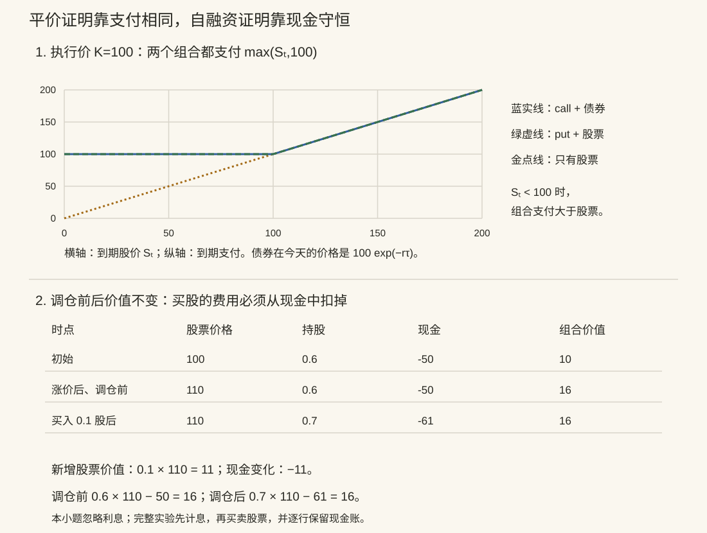

本页目录
随机微积分 III · Black–Scholes、Greeks 与离散对冲
同一份到期支付，若能用股票与现金复制，今天应值多少？本页从这本自融资账出发，分别讨论无套利恒等式、连续模型的定价公式，以及有限次调仓的一条路径。它们回答不同的问题。
学习层：平价、价格、对冲误差不是同一项检验
设无股息股票价格为 \(S_t\)，执行价 \(K>0\)，到期时间 \(T\)。欧式看涨期权（call）支付 \((S_T-K)^+\)，看跌期权（put）支付 \((K-S_T)^+\)，其中 \(x^+=\max(x,0)\)。
先比较两个组合：
| 组合 | 到期支付 |
|---|---|
| call + 到期支付 \(K\) 的债券 | \((S_T-K)^++K\) |
| put + 一股股票 | \((K-S_T)^++S_T\) |
两边都等于 \(\max(S_T,K)\)，并非总等于 \(S_T\)。 例如 \(S_T=60,K=100\) 时，两个组合都支付 100；只有 \(S_T\ge K\) 时才都支付 \(S_T\)。
在可交易这些资产、可作相应多空组合且无套利的条件下，相同到期现金流必须有相同的今天价格。这给出 put-call parity：
它尚未给出 \(C\) 和 \(P\) 各自是多少。要分别定价，还需模型或额外市场信息。
无 JavaScript 时的核算：取 \(S_0=K=100,r=0.05,\sigma=0.2,T=1\)，时间单位为年，利率连续复利，股票不支付股息。
| 量 | 数值或定义 | 应怎样解释 |
|---|---|---|
| call | 约 \(10.450584\) | 模型价格 |
| put | 约 \(5.573526\) | 模型价格 |
| 初始 delta | 约 \(0.636831\) 股 | 复制组合的股票持仓 |
| 初始现金 | \(C-\Delta_0S_0\)，约 \(-53.23248\) | 负现金代表模型内借款 |
| 平价差 | \(C-P=S_0-Ke^{-rT}\) | 现金流恒等式 |
| 离散终点误差 | \(V_T-(S_T-K)^+\) | 一条有限网格路径的结果 |
把场景漂移 \(\mu\) 改掉，模型价格不变，路径和离散对冲误差却可变化。增加调仓次数时，还必须保留同一驱动路径，才能解释差异来自什么。
实验先记录四个预测，再开放参数。它把 384 个细区间的 Brownian 增量聚合到八个网格，所有网格具有相同终点股票值；提供 3 组固定种子、逐行现金账以及两种期权的 Greeks。有限路径的误差不保证随细分单调下降。
1. 模型前提与“风险中性”的含义

上图把“股票跌到执行价以下”单独显露出来；下方现金账将在第 5 节展开。这两项核算都不需要随机模拟。
先在有限时段上取常数 \(r,\mu\) 和 \(\sigma>0\)：
本页假设股票不支付股息，可以无摩擦连续交易、借贷和做空，使用可容许的自融资策略，并以这个 Brownian 驱动的信息为市场信息。在这个单噪声、可交易股票与银行账户的模型内，可建立完备性；若额外加入未交易的随机风险，不能自动声称整个市场仍完备。
可容许性排除靠无限借贷、加倍下注等病态策略制造的伪套利。有限交易成本、买卖价差、跳跃、随机波动率或融资限制会改变问题，本页公式是相应简化模型的结论。
1.1 改变测度没有改变到期合约
设 \(\lambda=(\mu-r)/\sigma\)。常数参数满足有限时段的指数可积条件，Girsanov 变换可取
在等价测度 \(Q\) 下，股票满足
这是给可复制现金流定价的测度，不是断言真实世界的收益漂移一定等于 \(r\)。实际/场景测度中的 \(\mu\) 仍影响路径概率。
当 \(\sigma=0\) 时，这个除以 \(\sigma\) 的变换不适用。若仍要求无摩擦无套利的确定性股票模型，就必须有 \(\mu=r\)；否则可利用两个不同的确定增长率构造套利。实验允许 \(\sigma=0,\mu\ne r\) 作为模型失配场景，并明确标注，不能把它读成上述无套利定理的适用例。
2. Delta 对冲必须交代调仓资金
令复制组合价值为
自融资的含义是：买入新股票所需的现金来自组合内部，没有额外注资或提取。相应收益过程满足
若期权价值函数为 \(u(t,S)\)，并令 \(V_t=u(t,S_t)\)，Itô 公式给出
比较随机项，必须取 \(\Delta_t=u_S(t,S_t)\)。再比较漂移项：
所以得到 Black–Scholes PDE：
看涨期权终端条件为 \(u(T,S)=(S-K)^+\)。虽然终端支付有折点，在 \(\tau>0,\sigma>0,S>0\) 的内点，定价函数有用于上述推导的光滑性。
不能直接漏掉动态持仓的微分。 若写 \(\Pi_t=u(t,S_t)-\Delta_tS_t\)，乘积公式给出 \(d(\Delta S)=\Delta\,dS+S\,d\Delta+d[\Delta,S]\)。把 \(d\Pi\) 写成 \(du-\Delta\,dS\) 而不解释自融资现金账，会遗漏调仓项。上面的复制组合推导正是为了把这一步说清楚。
3. 从正态分布算出价格
在风险中性测度下，
贴现条件期望为
把事件 \(S_T>K\) 写成关于 \(Z\) 的阈值，再对正态密度配方，得到
\(\Phi\) 是标准正态累积分布，\(\phi=\Phi'\) 是其密度。\(\mu\) 消失是复制与风险中性结构的结果，不能理解为所有衍生品在任意模型下都与风险溢价无关。
3.1 平价不是一张万能的数值合格证
对于无股息欧式期权，同执行价、到期日与交割规则下，平价来自学习层的现金流复制，不需要假定股票一定服从 GBM。若存在股息、不同融资规则或提前行权，必须先重新写现金流。
另外有模型内的价格界：
一个程序若先计算 \(C\)，再强制令 \(P=C-S+Ke^{-r\tau}\)，即使 \(C\) 算错，平价残差也可以是 0。因此需要独立价格参考、支付恒等式和边界检验。
3.2 很小的价格也不应被减没
深度价外期权的价格可能远小于两个正态尾项。粗略 CDF 近似或用两个接近的数相减，会把正价格算成 0，甚至负数。
实验采用另一条正值表示。令 \(D=Ke^{-r\tau}\)、\(m=\ln(S/D)\)、\(w=\sigma\sqrt\tau\)。看涨与看跌的共同时间价值为
积分下端按极限理解。由 Vega 对总波动率积分即可推出该式；零波动端的价格是折现内在价值。因此 \(C=(S-D)^++\operatorname{TV}\)、\(P=(D-S)^++\operatorname{TV}\)。 它避免直接相减两个尾概率，但也意味着屏幕上的平价残差仍只是一项代数一致性检查。
例如 \(S=40,K=180,r=0.05,\sigma=0.1,\tau=1\)，模型 call 约为 \(1.88196\times10^{-48}\)，仍为正。更极端的量若低于浮点可表示范围，数值 0 表示下溢，不是数学上的零价格证明。
4. Greeks：先固定变量，再说导数
内点公式如下。\(\Theta=\partial u/\partial t=-\partial u/\partial\tau\)，保持 \(S\) 固定；时间单位为年。Vega 是对波动率一个绝对单位的导数，\(\rho\) 对利率一个绝对单位求导；若要表示一个百分点的变化，一阶近似还要乘 \(0.01\)。
| Greek | call | put |
|---|---|---|
| \(\Delta=\partial_Su\) | \(\Phi(d_1)\) | \(-\Phi(-d_1)\) |
| \(\Gamma=\partial_{SS}u\) | \(\phi(d_1)/(S\sigma\sqrt\tau)\) | 同 call |
| Vega \(=\partial_\sigma u\) | \(S\phi(d_1)\sqrt\tau\) | 同 call |
| \(\Theta\) | \(-\frac{S\phi(d_1)\sigma}{2\sqrt\tau}-rD\Phi(d_2)\) | \(-\frac{S\phi(d_1)\sigma}{2\sqrt\tau}+rD\Phi(-d_2)\) |
| \(\rho=\partial_ru\) | \(\tau D\Phi(d_2)\) | \(-\tau D\Phi(-d_2)\) |
Greeks 是局部导数，不能把 \(\Delta\,\Delta S\) 当成任意幅度价格变化的精确结果；二阶近似还要考虑曲率和交叉项。
4.1 到期时：支付的折点不让所有导数都失效
当 \(\tau=0\)，价格就是支付。远离 \(S=K\)，call 的 delta 为 0 或 1，gamma 为 0；在 \(S=K\)，对 \(S\) 的普通导数不存在，实验显示 \(1/2\) 仅是约定，不能叫作唯一数学 delta。
但到期价格不依赖 \(\sigma\)，所以到期 Vega 恒为 0，包括平值处。 到期 \(\rho\) 也为 0。不能因为 \(d_1\) 不能代入，就把所有敏感度都标成不可用。
时间只允许从到期前靠近，故 Theta 要说明单侧口径。\(\sigma>0,S=K\) 时，价格含 \(\sqrt\tau\) 主项，Theta 没有有限的到期前极限；远离折点，call 的极限为价内 \(-rK\)、价外 0，put 对称。
若同时 \(\sigma=0,S=K\)，时间方向还取决于 \(r\)：call 的单侧 Theta 为 \(-\max(rK,0)\)，put 为 \(\min(rK,0)\)。不同方向的边界极限不要混为一个无条件公式。
4.2 零波动时：折点移到了折现执行价
当 \(\sigma=0,\tau>0\)，
远离 \(S=D\)，gamma 为 0，波动率右侧导数 Vega 也为 0。恰在 \(S=D\)，对 \(S\) 的普通 delta/gamma 不存在，但波动率的右侧导数存在：
此时 \(\rho\) 有折点；Theta 在 \(r\ne0\) 时也有时间方向的折点。若 \(r=0\)，价格不随 \(\tau\) 改变，Theta 为 0，不能一概标成不可用。
实验的零波动平值预设用 \(r=0,S=K\) 表示明确的等号。一般接近折现执行价时，机器计算的相等不是数学等号的证明；不能用一个任意容差把附近的非折点全部归类为折点。
5. 离散账本：每次买股的钱从哪里来？
在网格 \(0=t_0<\cdots<t_n=T\)，先用模型价格建立组合：
\(b\) 是现金金额，不是银行账户份数，也不是 Brownian 运动。进入下一时刻后，先计息，再调仓：
买入 \(q\) 股花费 \(qS\)；卖出时 \(q<0\)，现金增加。调仓前后组合价值不变，这才是自融资的逐行检查。
最后一行无需再买入到期 delta；实验保留到期前持股，按 \(S_T\) 计价，比较
在无摩擦模型里，到期卖掉股票只把股票价值变成现金，不会改变组合总值或这个误差。“不平仓才保留真正误差”不是正确解释。
5.1 同一驱动与误差方向
实验使用精确 GBM 网格值：
先生成细区间 Brownian 增量，再聚合到粗网格，所以所有调仓方案都在同一条采样路径上比较。折线只连接这些采样时刻，不表示区间内部的真实路径。
在足够光滑、远离终端折点且步长小的局部展开中，对冲组合相对期权的单步误差主项近似为
其中 \((\Delta W)^2\) 并不每次等于 \(h\)，所以误差有正有负。有限层级、单路径的绝对误差可以不单调；连续复制极限的论证还需要概率意义与可积性控制，尤其不能忽略到期附近的曲率。
6. 三道逐步核算题
题 1：平价组合到底支付什么？ 取 \(K=100\)，分别令 \(S_T=60,100,140\)，列出 call、put、call+债券、put+股票的支付。
展开：用三种到期状态核对
| \(S_T\) | call | put | call+\(100\) | put+\(S_T\) |
|---|---|---|---|---|
| 60 | 0 | 40 | 100 | 100 |
| 100 | 0 | 0 | 100 | 100 |
| 140 | 40 | 0 | 140 | 140 |
两个组合总是相同，支付为 \(\max(S_T,100)\)。它们不等于“总是持有一股股票”；在股价低于执行价时还有保护性支付。再把今天的债券价格换成 \(100e^{-r\tau}\)，得到平价。
题 2：借款账户是否被忽略了？ 初始 \(S_0=100\)、组合价值 \(10\)、持股 \(0.6\)。忽略本小题区间内的利息，下一时刻股价为 110，目标持股变成 0.7。调仓后现金与组合价值是多少？
展开：买入的 0.1 股必须付钱
初始现金 \(10-0.6\times100=-50\)。下一时刻调仓前组合值 \(0.6\times110-50=16\)。 买入 \(0.1\) 股花费 11，现金变为 \(-61\)；调仓后组合值 \(0.7\times110-61=16\)，没有凭空增值。 若把现金仍写成 \(-50\)，就偷偷注入了 11，不能再称为自融资。
题 3：平值处的 Vega 为什么有两个不同答案？ 比较 \(\tau=0,S=K\) 与 \(\tau>0,r=0,S=K,\sigma=0\)。
展开：固定到期时间，与从正期限靠近，是不同问题
到期时价格是 \((S-K)^+\)，与波动率无关，所以 Vega 为 0。 若 \(\tau>0,r=0,S=K\)，小波动率下 \(C=S[2\Phi(\sigma\sqrt\tau/2)-1] =S\sigma\sqrt\tau/\sqrt{2\pi}+O(\sigma^3)\)， 所以在 \(\sigma=0\) 的右侧 Vega 为 \(S\sqrt\tau/\sqrt{2\pi}>0\)。 再让 \(\tau\downarrow0\)，它也趋于 0，并不矛盾。缺少普通 delta 的空间折点，不会自动破坏对其他变量的导数。
7. 参考与下一步
- Lawler，Stochastic Calculus，§5.6–5.7：可容许自融资组合、测度变换与鞅定价。
- MIT，Financial Derivatives 讲义：支付组合、无套利与期权定价的数学背景。
随机微积分三页至此形成一条联系：Itô 描述路径上的函数变化，扩散方程描述概率分布，自融资复制把路径变化变成价格方程。后续研究跳跃、随机波动率或交易摩擦时，应先检查这条推导中的哪一项假设发生了变化。